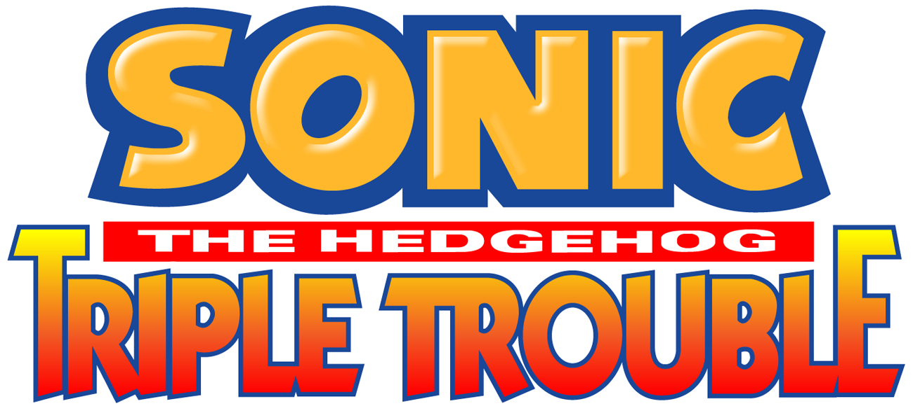
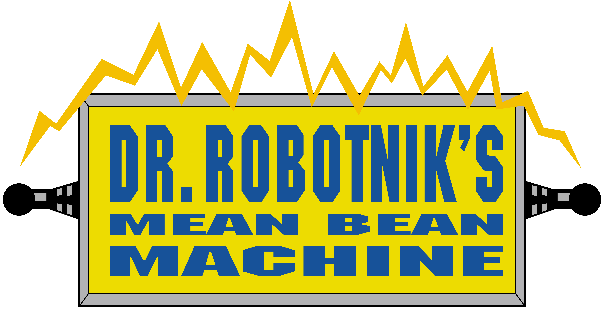
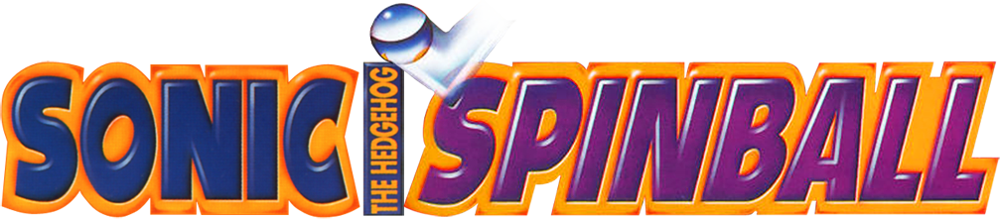
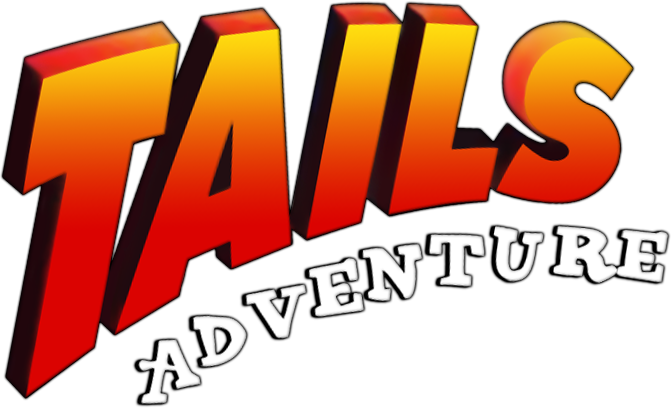
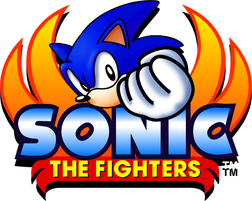
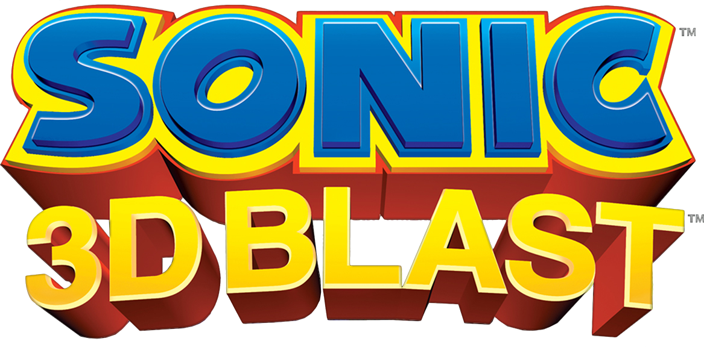
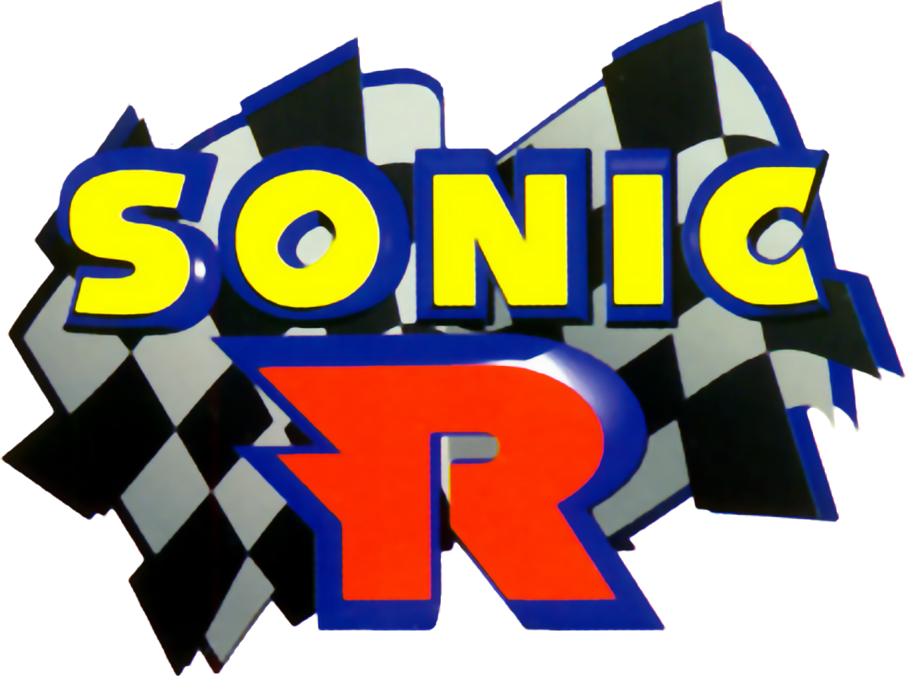
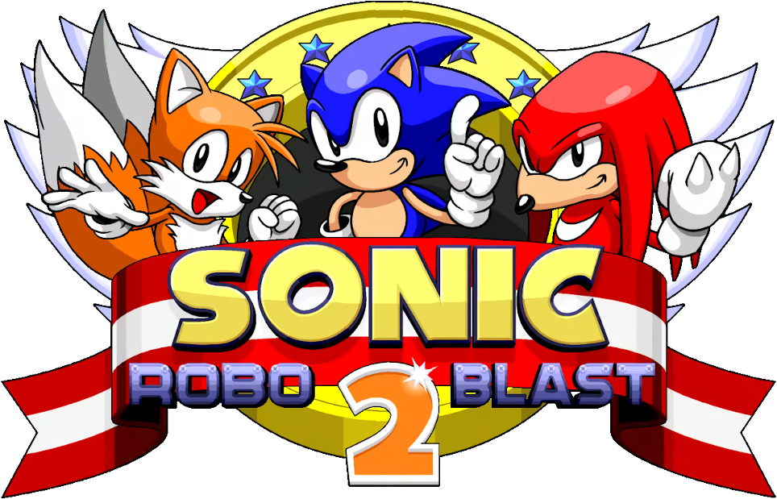
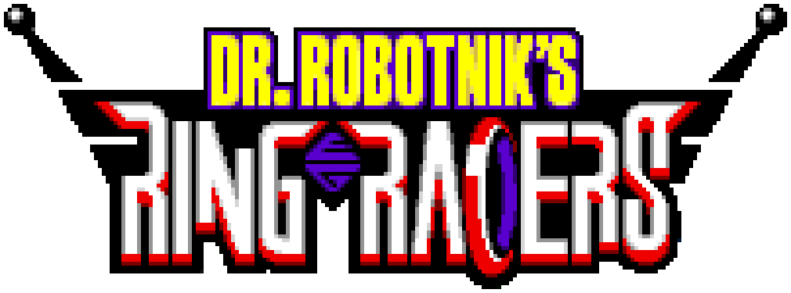

Durante a era clássica, diversos jogos da franquia foram lançados, mas não tiveram tanto destaque assim. Mas isso não quer dizer que a qualidade desses jogos é inferior aos jogos principais! Essa página mostra a melhor forma de jogar esses jogos, além de mostrar jogos criados por fãs que tentam simular o estilo desses jogos.
Remakes do Sonic the Hedgehog 1 e 2 de Master System/Game Gear que adicionam inúmeras adições opcionais ao jogo.
Remakes do Sonic the Hedgehog 1 e 2 de Master System/Game Gear que adicionam inúmeras adições opcionais ao jogo.
Sonic 1 SMS Remake Sonic 2 SMS RemakeRemake do Sonic Chaos de Master System/Game Gear criado na mesma engine dos remakes do 1 e 2 de SMS
Remake do Sonic Chaos de Master System/Game Gear criado na mesma engine dos remakes do 1 e 2 de SMS
Sonic Chaos Remake
Sonic Triple Trouble possui um porte para o Master System e um remake no estilo dos jogos do Mega Drive
Descompacte o zip. Para aplicar o patch vá a página Rom Patcher JS, clique em "ROM file:" e selecione o arquivo do jogo, logo após clique em "Patch file:" e selecione o arquivo IPS que você baixou. Depois disso, clique em "Apply patch" para baixar o arquivo final e rode-o em um emulador de sua escolha
Sonic Triple Trouble possui um porte para o Master System e um remake no estilo dos jogos do Mega Drive Port para Master System Descompacte o zip. Para aplicar o patch vá a página Rom Patcher JS, clique em "ROM file:" e selecione o arquivo do jogo, logo após clique em "Patch file:" e selecione o arquivo IPS que você baixou. Depois disso, clique em "Apply patch" para baixar o arquivo final e rode-o em um emulador de sua escolha

Dr. Robotnik's Mean Bean Machine - DX Edition é uma versão melhorada do jogo original, contendo diversas melhorias
Para aplicar o patch vá a página Rom Patcher JS, clique em "ROM file:" e selecione o arquivo do jogo, logo após clique em "Patch file:" e selecione o arquivo xdelta que você baixou. Depois disso, clique em "Apply patch" para baixar o arquivo final e rode-o em um emulador de sua escolha
Dr. Robotnik's Mean Bean Machine - DX Edition é uma versão melhorada do jogo original, contendo diversas melhorias
Para aplicar o patch vá a página Rom Patcher JS, clique em "ROM file:" e selecione o arquivo do jogo, logo após clique em "Patch file:" e selecione o arquivo xdelta que você baixou. Depois disso, clique em "Apply patch" para baixar o arquivo final e rode-o em um emulador de sua escolha

Adiciona pequenas melhorias para deixar a dificuldade do jogo mais justa
Download do PatchPara aplicar o patch vá a página Rom Patcher JS, clique em "ROM file:" e selecione o arquivo do jogo, logo após clique em "Patch file:" e selecione o arquivo xdelta que você baixou. Depois disso, clique em "Apply patch" para baixar o arquivo final e rode-o em um emulador de sua escolha
Adiciona pequenas melhorias para deixar a dificuldade do jogo mais justa
Download do PatchPara aplicar o patch vá a página Rom Patcher JS, clique em "ROM file:" e selecione o arquivo do jogo, logo após clique em "Patch file:" e selecione o arquivo xdelta que você baixou. Depois disso, clique em "Apply patch" para baixar o arquivo final e rode-o em um emulador de sua escolha

O programa GG2SMS converte jogos do Game Gear para jogos de MasterSystem, permitindo jogar os jogos com uma resulução maior
GG2SMS Tails AdventureDescompacte o zip e coloque o arquivo original do jogo na pasta "Tails Adventure SMS Deluxe" e clique em "Patcher.bat", rode o arquivo final em seu emulador de escolha
O programa GG2SMS converte jogos do Game Gear para jogos de MasterSystem, permitindo jogar os jogos com uma resulução maior
GG2SMS Tails AdventureDescompacte o zip e coloque o arquivo original do jogo na pasta "Tails Adventure SMS Deluxe" e clique em "Patcher.bat", rode o arquivo final em seu emulador de escolha

Fãs criaram uma versão que acrescenta personagens inéditos e um rebalanciamento geral no jogo, ela só funciona com a versão de PS3
Emulador (RPCS3)É necessário o Mod Loader (Instalação similar a do Sonic Adventure 1/2)
Mod Loader Community EditionColoque o o mod na pasta de mod do Mod Loader e selecione "Install All Mods" para instalar o mod
Fãs criaram uma versão que acrescenta personagens inéditos e um rebalanciamento geral no jogo, ela só funciona com a versão de PS3
Emulador (RPCS3)É necessário o Mod Loader (Instalação similar a do Sonic Adventure 1/2)
Mod Loader Community EditionColoque o o mod na pasta de mod do Mod Loader e selecione "Install All Mods" para instalar o mod

Um dos programadores do jogo original criou uma versão de diretor do jogo que adiciona diversas melhorias ao jogo
Download do PatchPara aplicar o patch vá a página Rom Patcher JS, clique em "ROM file:" e selecione o arquivo do jogo, logo após clique em "Patch file:" e selecione o arquivo xdelta que você baixou. Depois disso, clique em "Apply patch" para baixar o arquivo final e rode-o em um emulador de sua escolha
Um dos programadores do jogo original criou uma versão de diretor do jogo que adiciona diversas melhorias ao jogo
Download do PatchPara aplicar o patch vá a página Rom Patcher JS, clique em "ROM file:" e selecione o arquivo do jogo, logo após clique em "Patch file:" e selecione o arquivo xdelta que você baixou. Depois disso, clique em "Apply patch" para baixar o arquivo final e rode-o em um emulador de sua escolha

Esses dois mods melhoram consideravelmente a versão de PC de 2004 do jogo
conversor para a versão de 2004É necessário o Sonic R Mod Loader (Instalação similar a do Sonic Adventure 1/2)
Mods
Esses dois mods melhoram consideravelmente a versão de PC de 2004 do jogo
conversor para a versão de 2004É necessário o Sonic R Mod Loader (Instalação similar a do Sonic Adventure 1/2)
Mods

Um jogo 3D que está em desenvolvimento desde 1998! Possui uma campanha completa, com suporte a mods.
Um jogo 3D que está em desenvolvimento desde 1998! Possui uma campanha completa, com suporte a mods.

Um jogo similar a Mario Kart criado por fãs baseado na engine do Doom, possui modo online e suporte a mods
Um jogo similar a Mario Kart criado por fãs baseado na engine do Doom, possui modo online e suporte a mods